Visium Prostate Integration
5/5/23
Source:vignettes/visium_prostate_integration.Rmd
visium_prostate_integration.Rmd1 Start Giotto
# Ensure Giotto Suite is installed
if(!"Giotto" %in% installed.packages()) {
devtools::install_github("drieslab/Giotto@suite")
}
library(Giotto)
# Ensure Giotto Data is installed
if(!"GiottoData" %in% installed.packages()) {
devtools::install_github("drieslab/GiottoData")
}
library(GiottoData)
# Ensure the Python environment for Giotto has been installed
genv_exists = checkGiottoEnvironment()
if(!genv_exists){
# The following command need only be run once to install the Giotto environment
installGiottoEnvironment()
}
# 1. set working directory
results_directory = getwd()
# 2. set giotto python path
# set python path to your preferred python version path
# set python path to NULL if you want to automatically install (only the 1st time) and use the giotto miniconda environment
python_path = NULL
if(is.null(python_path)) {
installGiottoEnvironment()
}
# 3. create giotto instructions
instrs = createGiottoInstructions(save_dir = results_directory,
save_plot = TRUE,
show_plot = TRUE,
python_path = python_path)2 Dataset explanation
10X genomics recently launched a new platform to obtain spatial expression data using a Visium Spatial Gene Expression slide.
The Visium Cancer Prostate data to run this tutorial can be found here The Visium Normal Prostate data to run this tutorial can be found here
Visium technology:

High resolution png from original tissue:
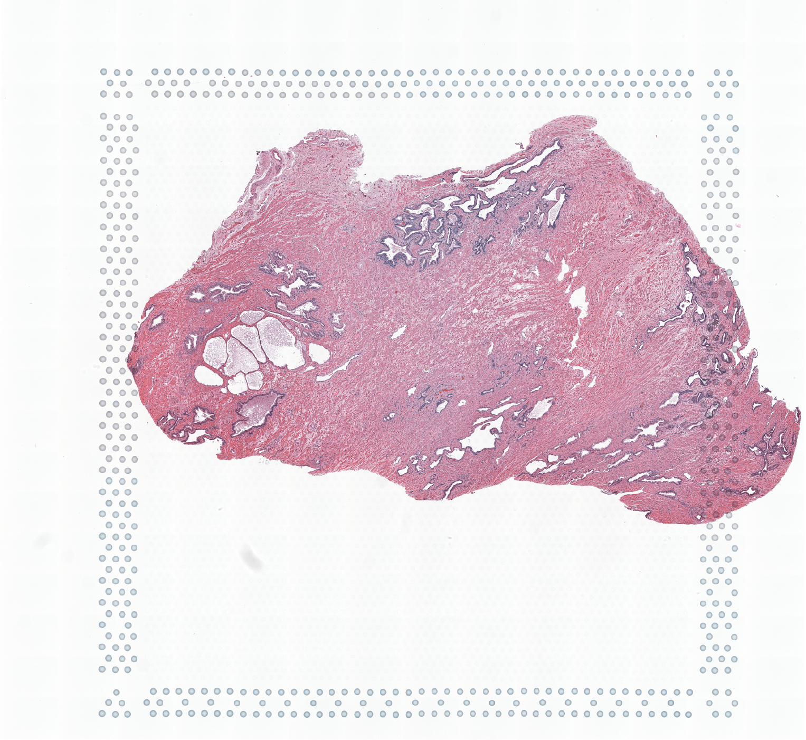

3 Create Giotto objects and join
# This dataset must be downlaoded manually; please do so and change the path below as appropriate
data_directory <- getwd()
## obese upper
N_pros = createGiottoVisiumObject(
visium_dir = paste0(data_directory,'/Visium_FFPE_Human_Normal_Prostate'),
expr_data = 'raw',
png_name = 'tissue_lowres_image.png',
gene_column_index = 2,
instructions = instrs
)
## obese lower
C_pros = createGiottoVisiumObject(
visium_dir = paste0(data_directory,'/Visium_FFPE_Human_Prostate_Cancer/'),
expr_data = 'raw',
png_name = 'tissue_lowres_image.png',
gene_column_index = 2,
instructions = instrs
)
# join giotto objects
# joining with x_shift has the advantage that you can join both 2D and 3D data
# x_padding determines how much distance is between each dataset
# if x_shift = NULL, then the total shift will be guessed from the giotto image
testcombo = joinGiottoObjects(gobject_list = list(N_pros, C_pros),
gobject_names = c('NP', 'CP'),
join_method = 'shift', x_padding = 1000)
# join info is stored in this slot
# simple list for now
testcombo@join_info
# check joined Giotto object
fDataDT(testcombo)
pDataDT(testcombo)
showGiottoImageNames(testcombo)
showGiottoSpatLocs(testcombo)
showGiottoExpression(testcombo)
# this plots all the images by list_ID
spatPlot2D(gobject = testcombo, cell_color = 'in_tissue',
show_image = T, image_name = c("NP-image", "CP-image"),
group_by = 'list_ID', point_alpha = 0.5,
save_param = list(save_name = "1a_plot"))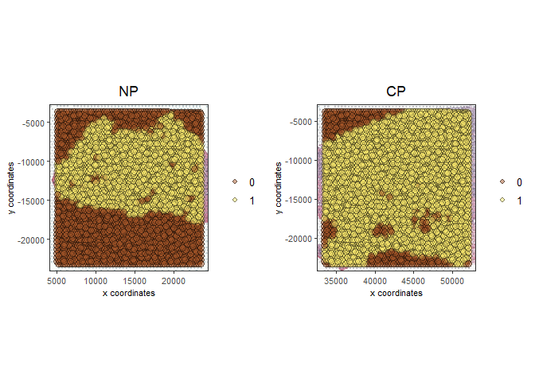
# this plots one selected image
spatPlot2D(gobject = testcombo, cell_color = 'in_tissue',
show_image = T, image_name = c("NP-image"), point_alpha = 0.3,
save_param = list(save_name = "1b_plot"))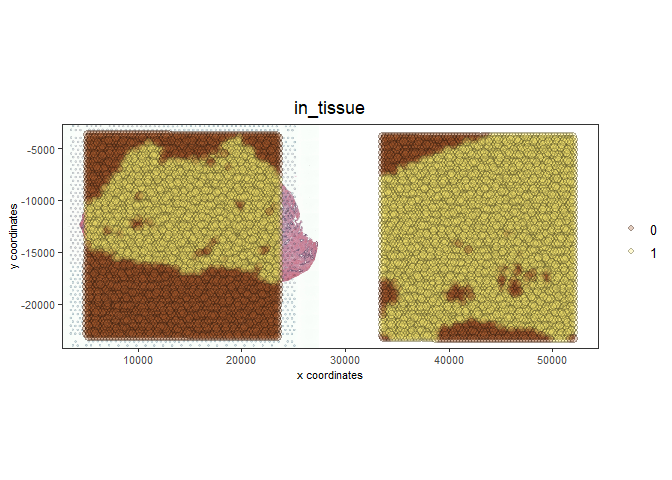
# this plots two selected images
spatPlot2D(gobject = testcombo, cell_color = 'in_tissue',
show_image = T, image_name = c( "NP-image", "CP-image"),
point_alpha = 0.3,
save_param = list(save_name = "1c_plot"))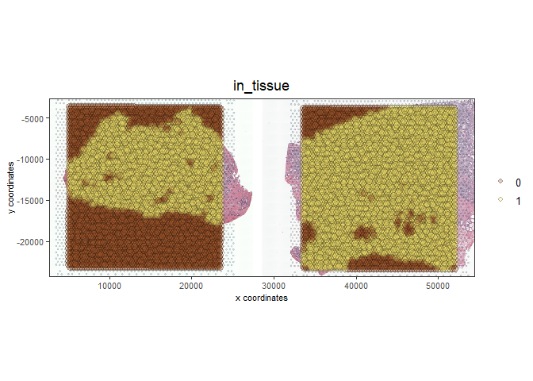
4 Process Giotto Objects
# subset on in-tissue spots
metadata = pDataDT(testcombo)
in_tissue_barcodes = metadata[in_tissue == 1]$cell_ID
testcombo = subsetGiotto(testcombo, cell_ids = in_tissue_barcodes)
## filter
testcombo <- filterGiotto(gobject = testcombo,
expression_threshold = 1,
feat_det_in_min_cells = 50,
min_det_feats_per_cell = 500,
expression_values = c('raw'),
verbose = T)
## normalize
testcombo <- normalizeGiotto(gobject = testcombo, scalefactor = 6000)
## add gene & cell statistics
testcombo <- addStatistics(gobject = testcombo, expression_values = 'raw')
fmeta = fDataDT(testcombo)
testfeats = fmeta[perc_cells > 20 & perc_cells < 50][100:110]$feat_ID
violinPlot(testcombo, feats = testfeats, cluster_column = 'list_ID', save_param = list(save_name = "2a_plot"))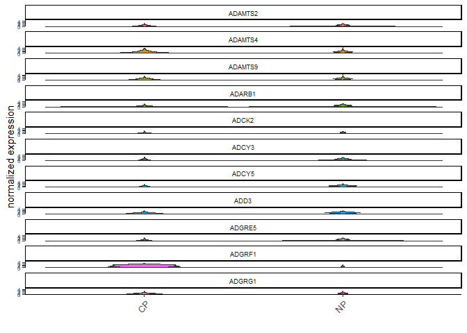
plotMetaDataHeatmap(testcombo, selected_feats = testfeats, metadata_cols = 'list_ID', save_param = list(save_name = "2b_plot"))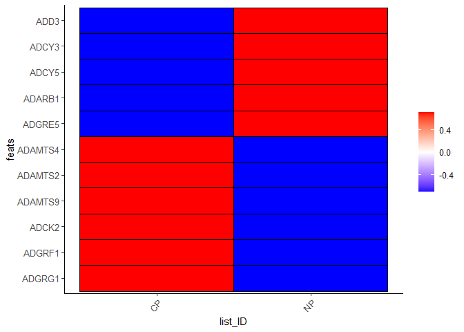
## visualize
spatPlot2D(gobject = testcombo, group_by = 'list_ID', cell_color = 'nr_feats', color_as_factor = F, point_size = 0.75, save_param = list(save_name = "2c_plot"))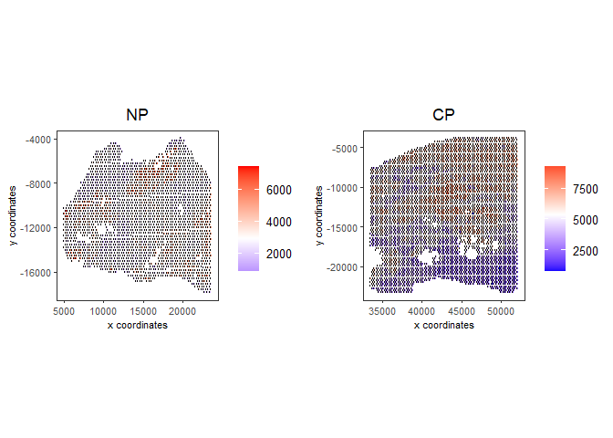
5 Dimention Reduction
## PCA ##
testcombo <- calculateHVF(gobject = testcombo)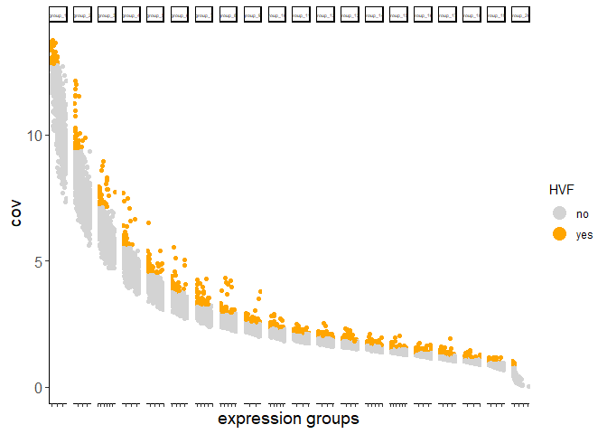
testcombo <- runPCA(gobject = testcombo, center = TRUE, scale_unit = TRUE)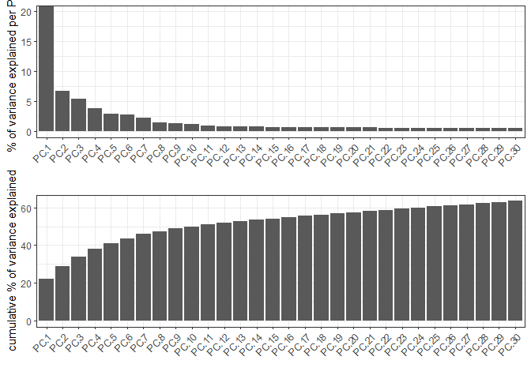
6 Clustering
6.1 Without Integration
Integration is usually needed for dataset of different conditions to minimize batch effects. Without integration means without using any integration methods.
## cluster and run UMAP ##
# sNN network (default)
testcombo <- createNearestNetwork(gobject = testcombo,
dim_reduction_to_use = 'pca', dim_reduction_name = 'pca',
dimensions_to_use = 1:10, k = 15)
# Leiden clustering
testcombo <- doLeidenCluster(gobject = testcombo, resolution = 0.2, n_iterations = 1000)
# UMAP
testcombo = runUMAP(testcombo)
plotUMAP(gobject = testcombo,
cell_color = 'leiden_clus', show_NN_network = T, point_size = 1.5,
save_param = list(save_name = "4.1a_plot"))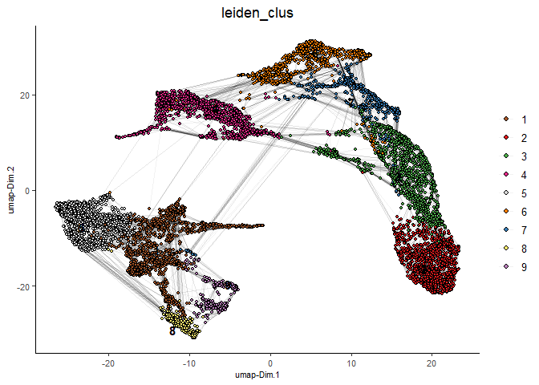
spatPlot2D(gobject = testcombo, group_by = 'list_ID',
cell_color = 'leiden_clus',
point_size = 1.5,
save_param = list(save_name = "4.1b_plot"))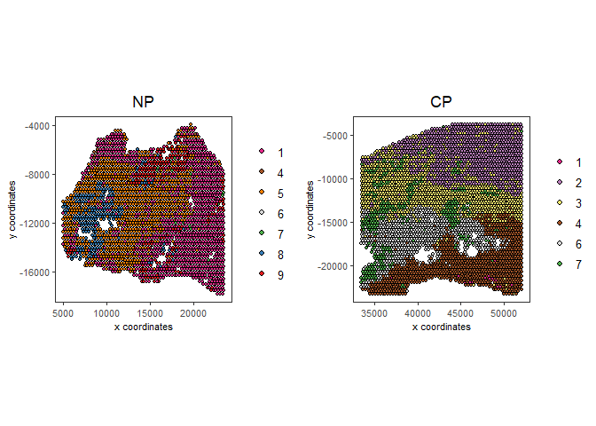
spatDimPlot2D(gobject = testcombo,
cell_color = 'leiden_clus',
save_param = list(save_name = "4.1c_plot"))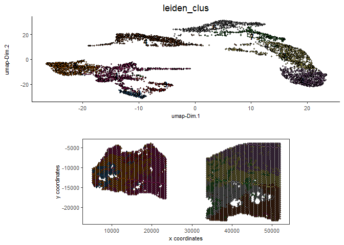
6.2 With Harmony integration
Harmony is a integration algorithm developed by Korsunsky, I. et al.. It was designed for integration of single cell data but also work well on spatial datasets.
## data integration, cluster and run UMAP ##
# harmony
#library(devtools)
#install_github("immunogenomics/harmony")
library(harmony)
## run harmony integration
testcombo = runGiottoHarmony(testcombo, vars_use = 'list_ID', do_pca = F)
## sNN network (default)
testcombo <- createNearestNetwork(gobject = testcombo,
dim_reduction_to_use = 'harmony', dim_reduction_name = 'harmony', name = 'NN.harmony',
dimensions_to_use = 1:10, k = 15)
## Leiden clustering
testcombo <- doLeidenCluster(gobject = testcombo,
network_name = 'NN.harmony', resolution = 0.2, n_iterations = 1000, name = 'leiden_harmony')
# UMAP dimension reduction
testcombo = runUMAP(testcombo, dim_reduction_name = 'harmony', dim_reduction_to_use = 'harmony', name = 'umap_harmony')
plotUMAP(gobject = testcombo,
dim_reduction_name = 'umap_harmony',
cell_color = 'leiden_harmony',
show_NN_network = F,
point_size = 1.5,
save_param = list(save_name = "4.2a_plot"))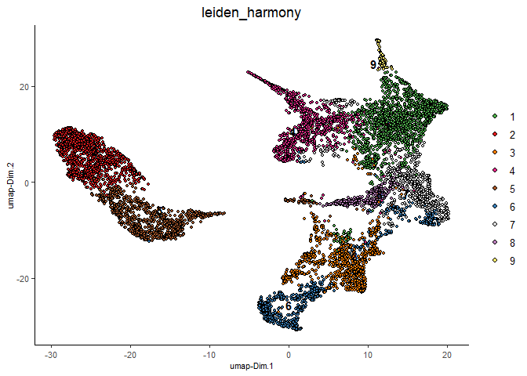
# If you want to show NN network information, you will need to specify these arguments in the plotUMAP function
# show_NN_network = T, nn_network_to_use = 'sNN' , network_name = 'NN.harmony'
spatPlot2D(gobject = testcombo, group_by = 'list_ID',
cell_color = 'leiden_harmony',
point_size = 1.5,
save_param = list(save_name = "4.2b_plot"))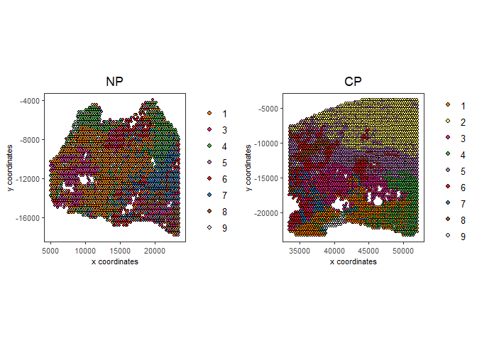
spatDimPlot2D(gobject = testcombo,
dim_reduction_to_use = 'umap', dim_reduction_name = 'umap_harmony',
cell_color = 'leiden_harmony',
save_param = list(save_name = "4.2c_plot"))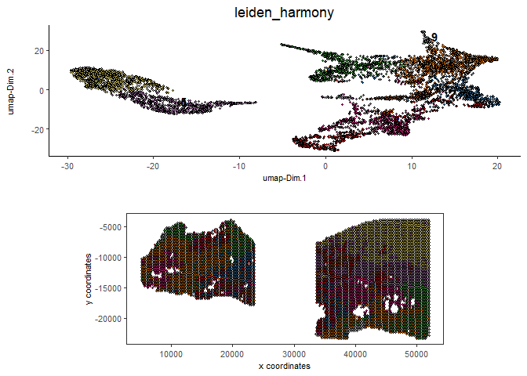
# compare to previous results
spatPlot2D(gobject = testcombo,
cell_color = 'leiden_clus',
save_param = list(save_name = "4_w_o_integration_plot"))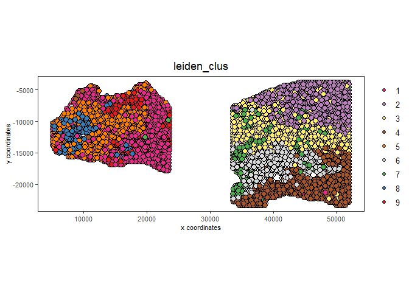
spatPlot2D(gobject = testcombo,
cell_color = 'leiden_harmony',
save_param = list(save_name = "4_w_integration_plot"))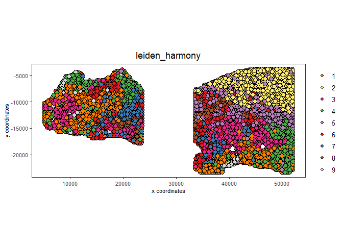
7 Cell type annotation
Visium spatial transcriptomics does not provide single-cell resolution, making cell type annotation a harder problem. Giotto provides several ways to calculate enrichment of specific cell-type signature gene list:
- PAGE
- hypergeometric test
- Rank
- DWLS Deconvolution
This is also the easiest way to integrate Visium datasets with single cell data. Example shown here is from Ma et al. from two prostate cancer patients. The raw dataset can be found here Giotto_SC is processed variable in the single cell RNAseq tutorial. You can also get access to the processed files of this dataset using getSpatialDataset
# download data to results directory ####
# if wget is installed, set method = 'wget'
# if you run into authentication issues with wget, then add " extra = '--no-check-certificate' "
getSpatialDataset(dataset = 'scRNA_prostate', directory = data_directory)
sc_expression = paste0(data_directory, "/prostate_sc_expression_matrix.csv.gz")
sc_metadata = paste0(data_directory, "/prostate_sc_metadata.csv")
giotto_SC <- createGiottoObject(
expression = sc_expression,
instructions = instrs
)
giotto_SC <- addCellMetadata(giotto_SC,
new_metadata = data.table::fread(sc_metadata))
giotto_SC<- normalizeGiotto(giotto_SC)7.1 PAGE enrichment
# Create PAGE matrix
# PAGE matrix should be a binary matrix with each row represent a gene marker and each column represent a cell type
# markers_scran is generated from single cell analysis ()
markers_scran = findMarkers_one_vs_all(gobject=giotto_SC,
method="scran",
expression_values="normalized",
cluster_column='prostate_labels',
min_feats=3)
top_markers <- markers_scran[, head(.SD, 10), by="cluster"]
celltypes<-levels(factor(markers_scran$cluster))
sign_list<-list()
for (i in 1:length(celltypes)){
sign_list[[i]]<-top_markers[which(top_markers$cluster == celltypes[i]),]$feats
}
PAGE_matrix = makeSignMatrixPAGE(sign_names = celltypes,
sign_list = sign_list)
testcombo = runPAGEEnrich(gobject = testcombo,
sign_matrix = PAGE_matrix,
min_overlap_genes = 2)
cell_types_subset = colnames(PAGE_matrix)
# Plot PAGE enrichment result
spatCellPlot(gobject = testcombo,
spat_enr_names = 'PAGE',
cell_annotation_values = cell_types_subset[1:4],
cow_n_col = 2,coord_fix_ratio = NULL, point_size = 1.25,
save_param = list(save_name = "5a_PAGE_plot"))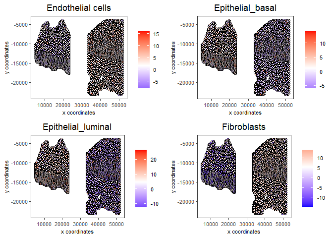
7.2 Hypergeometric test
testcombo = runHyperGeometricEnrich(gobject = testcombo,
expression_values = "normalized",
sign_matrix = PAGE_matrix)
cell_types_subset = colnames(PAGE_matrix)
spatCellPlot(gobject = testcombo,
spat_enr_names = 'hypergeometric',
cell_annotation_values = cell_types_subset[1:4],
cow_n_col = 2,coord_fix_ratio = NULL, point_size = 1.75,
save_param = list(save_name = "5b_HyperGeometric_plot"))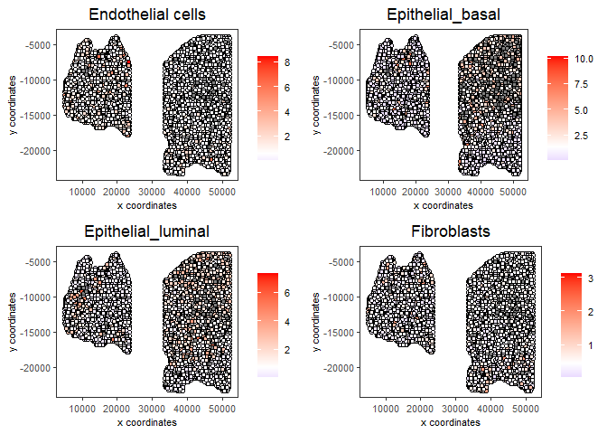
7.3 Rank Enrichment
# Create rank matrix, not that rank matrix is different from PAGE
# A count matrix and a vector for all cell labels will be needed
sc_expression_norm = getExpression(giotto_SC,
values = "normalized",
output = "matrix")
prostate_feats = pDataDT(giotto_SC)$prostate_label
rank_matrix = makeSignMatrixRank(sc_matrix = sc_expression_norm,
sc_cluster_ids = prostate_feats)
colnames(rank_matrix)<-levels(factor(prostate_feats))
testcombo = runRankEnrich(gobject = testcombo, sign_matrix = rank_matrix,expression_values = "normalized")
# Plot Rank enrichment result
spatCellPlot2D(gobject = testcombo,
spat_enr_names = 'rank',
cell_annotation_values = cell_types_subset[1:4],
cow_n_col = 2,coord_fix_ratio = NULL, point_size = 1,
save_param = list(save_name = "5c_Rank_plot"))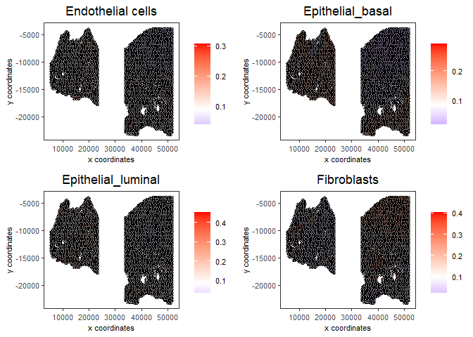
7.4 DWLS Deconvolution
# Create DWLS matrix, not that DWLS matrix is different from PAGE and rank
# A count matrix a vector for a list of gene signatures and a vector for all cell labels will be needed
DWLS_matrix<-makeSignMatrixDWLSfromMatrix(matrix = sc_expression_norm,
cell_type = prostate_feats,
sign_gene = top_markers$feats)
testcombo = runDWLSDeconv(gobject = testcombo, sign_matrix = DWLS_matrix)
# Plot DWLS deconvolution result
spatCellPlot2D(gobject = testcombo,
spat_enr_names = 'DWLS',
cell_annotation_values = levels(factor(prostate_feats))[1:4],
cow_n_col = 2,coord_fix_ratio = NULL, point_size = 1,
save_param = list(save_name = "5d_DWLS_plot"))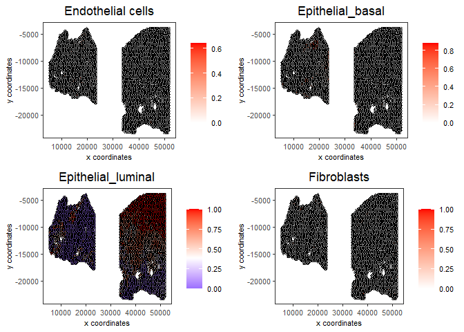
8 Session Info
sessionInfo()
R version 4.2.2 (2022-10-31 ucrt)
Platform: x86_64-w64-mingw32/x64 (64-bit)
Running under: Windows 10 x64 (build 22621)
Matrix products: default
locale:
[1] LC_COLLATE=English_United States.utf8
[2] LC_CTYPE=English_United States.utf8
[3] LC_MONETARY=English_United States.utf8
[4] LC_NUMERIC=C
[5] LC_TIME=English_United States.utf8
attached base packages:
[1] stats graphics grDevices utils datasets methods base
other attached packages:
[1] harmony_0.1.1 Rcpp_1.0.10 GiottoData_0.2.1 Giotto_3.3.0
[5] testthat_3.1.5
loaded via a namespace (and not attached):
[1] systemfonts_1.0.4 plyr_1.8.8
[3] igraph_1.4.1 lazyeval_0.2.2
[5] sp_1.6-0 BiocParallel_1.32.6
[7] listenv_0.9.0 usethis_2.1.6
[9] GenomeInfoDb_1.34.6 ggplot2_3.4.2
[11] digest_0.6.30 htmltools_0.5.4
[13] magick_2.7.4 fansi_1.0.4
[15] magrittr_2.0.3 memoise_2.0.1
[17] ScaledMatrix_1.6.0 cluster_2.1.4
[19] limma_3.54.2 remotes_2.4.2
[21] globals_0.16.2 matrixStats_0.63.0
[23] R.utils_2.12.2 prettyunits_1.1.1
[25] colorspace_2.1-0 rappdirs_0.3.3
[27] ggrepel_0.9.2 textshaping_0.3.6
[29] xfun_0.38 dplyr_1.1.1
[31] callr_3.7.3 crayon_1.5.2
[33] RCurl_1.98-1.9 jsonlite_1.8.3
[35] progressr_0.13.0 glue_1.6.2
[37] gtable_0.3.3 zlibbioc_1.44.0
[39] XVector_0.38.0 DelayedArray_0.24.0
[41] pkgbuild_1.4.0 BiocSingular_1.14.0
[43] RcppZiggurat_0.1.6 future.apply_1.10.0
[45] SingleCellExperiment_1.20.0 BiocGenerics_0.44.0
[47] scales_1.2.1 edgeR_3.40.1
[49] miniUI_0.1.1.1 viridisLite_0.4.2
[51] xtable_1.8-4 dqrng_0.3.0
[53] reticulate_1.26 rsvd_1.0.5
[55] stats4_4.2.2 profvis_0.3.7
[57] metapod_1.6.0 htmlwidgets_1.6.2
[59] httr_1.4.5 RColorBrewer_1.1-3
[61] ellipsis_0.3.2 scuttle_1.8.3
[63] urlchecker_1.0.1 pkgconfig_2.0.3
[65] R.methodsS3_1.8.2 farver_2.1.1
[67] uwot_0.1.14 deldir_1.0-6
[69] locfit_1.5-9.7 utf8_1.2.3
[71] here_1.0.1 tidyselect_1.2.0
[73] labeling_0.4.2 rlang_1.1.0
[75] reshape2_1.4.4 later_1.3.0
[77] munsell_0.5.0 tools_4.2.2
[79] cachem_1.0.6 cli_3.4.1
[81] dbscan_1.1-11 generics_0.1.3
[83] devtools_2.4.5 evaluate_0.20
[85] stringr_1.5.0 fastmap_1.1.0
[87] yaml_2.3.7 ragg_1.2.4
[89] processx_3.8.0 knitr_1.42
[91] fs_1.5.2 purrr_1.0.1
[93] future_1.32.0 sparseMatrixStats_1.10.0
[95] mime_0.12 scran_1.26.1
[97] R.oo_1.25.0 brio_1.1.3
[99] compiler_4.2.2 rstudioapi_0.14
[101] plotly_4.10.1 png_0.1-7
[103] statmod_1.4.37 tibble_3.2.1
[105] stringi_1.7.8 ps_1.7.2
[107] desc_1.4.2 bluster_1.8.0
[109] lattice_0.20-45 Matrix_1.5-1
[111] vctrs_0.6.1 pillar_1.9.0
[113] lifecycle_1.0.3 BiocNeighbors_1.16.0
[115] RcppAnnoy_0.0.20 data.table_1.14.6
[117] cowplot_1.1.1 bitops_1.0-7
[119] irlba_2.3.5.1 httpuv_1.6.6
[121] GenomicRanges_1.50.2 R6_2.5.1
[123] promises_1.2.0.1 IRanges_2.32.0
[125] parallelly_1.35.0 sessioninfo_1.2.2
[127] codetools_0.2-18 pkgload_1.3.2
[129] SummarizedExperiment_1.28.0 rprojroot_2.0.3
[131] withr_2.5.0 S4Vectors_0.36.2
[133] GenomeInfoDbData_1.2.9 parallel_4.2.2
[135] terra_1.7-18 quadprog_1.5-8
[137] grid_4.2.2 beachmat_2.14.0
[139] tidyr_1.3.0 Rfast_2.0.6
[141] DelayedMatrixStats_1.20.0 rmarkdown_2.21
[143] MatrixGenerics_1.10.0 Rtsne_0.16
[145] Biobase_2.58.0 shiny_1.7.4